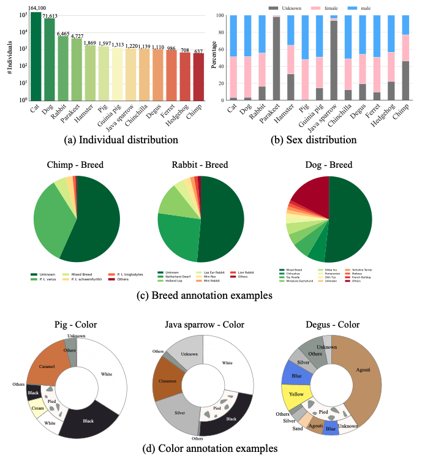

Automated animal face identification plays a crucial role in the monitoring of behaviors, conducting of surveys, and finding of lost animals. Despite the advancements in human face identification, the lack of datasets and benchmarks in the animal domain has impeded progress. In this paper, we introduce the PetFace dataset, a comprehensive resource for animal face identification encompassing 257,484 unique individuals across 13 animal families and 319 breed categories, including both experimental and pet animals. This large-scale collection of individuals facilitates the investigation of unseen animal face verification, an area that has not been sufficiently explored in existing datasets due to the limited number of individuals. Moreover, PetFace also has fine-grained annotations such as sex, breed, color, and pattern. The models trained on our dataset outperform those trained on prior datasets, even for detailed breed variations and unseen animal families. Our result also indicates that there is some room to improve the performance of integrated identification on multiple animal families. We hope the PetFace dataset will facilitate animal face identification and encourage the development of non-invasive animal automatic identification methods.
Comig soon...
Each figure represents (a) the number of individuals in each animal family. (b) the sex distribution percentage by animal family. (c) examples of breed annotations. (d) examples of color annotations.
ArcFace outperforms the other loss functions. The jointly trained model on our PetFace shows the best average top-1 accuracy.
Jointly trained on our PetFace shows the best performance. We also compared to the trained models on other dataset.
Similarity distributions of (a) CLIP, (b) MegaDescriptor, and (c) our joint-trained model on cats. The horizontal axis represents similarity and the vertical axis represents frequency. The model trained on PetFace shows the most distinct separation between positive and negative samples.
This dataset is for research purposes only. Please fill in the Google Form to confirm that the usage is for research purposes. We will send the dataset link as soon as we confirm the Google Form.